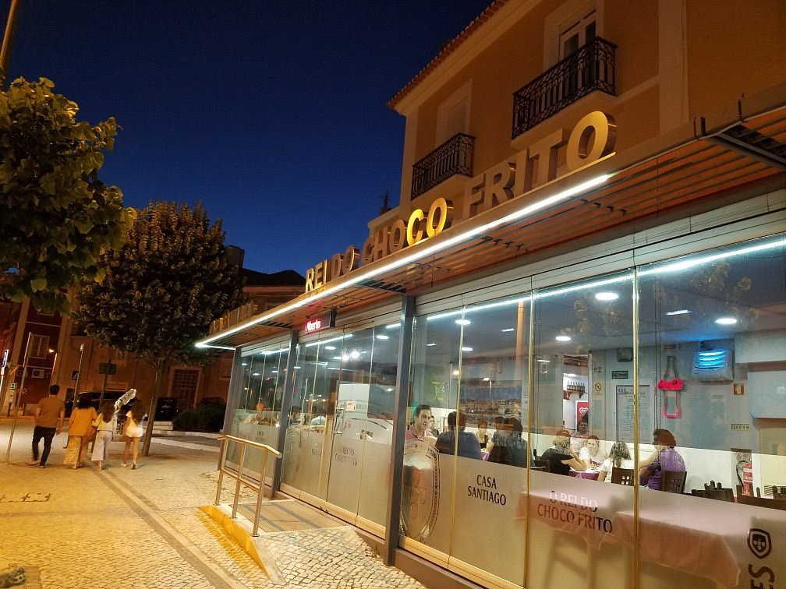
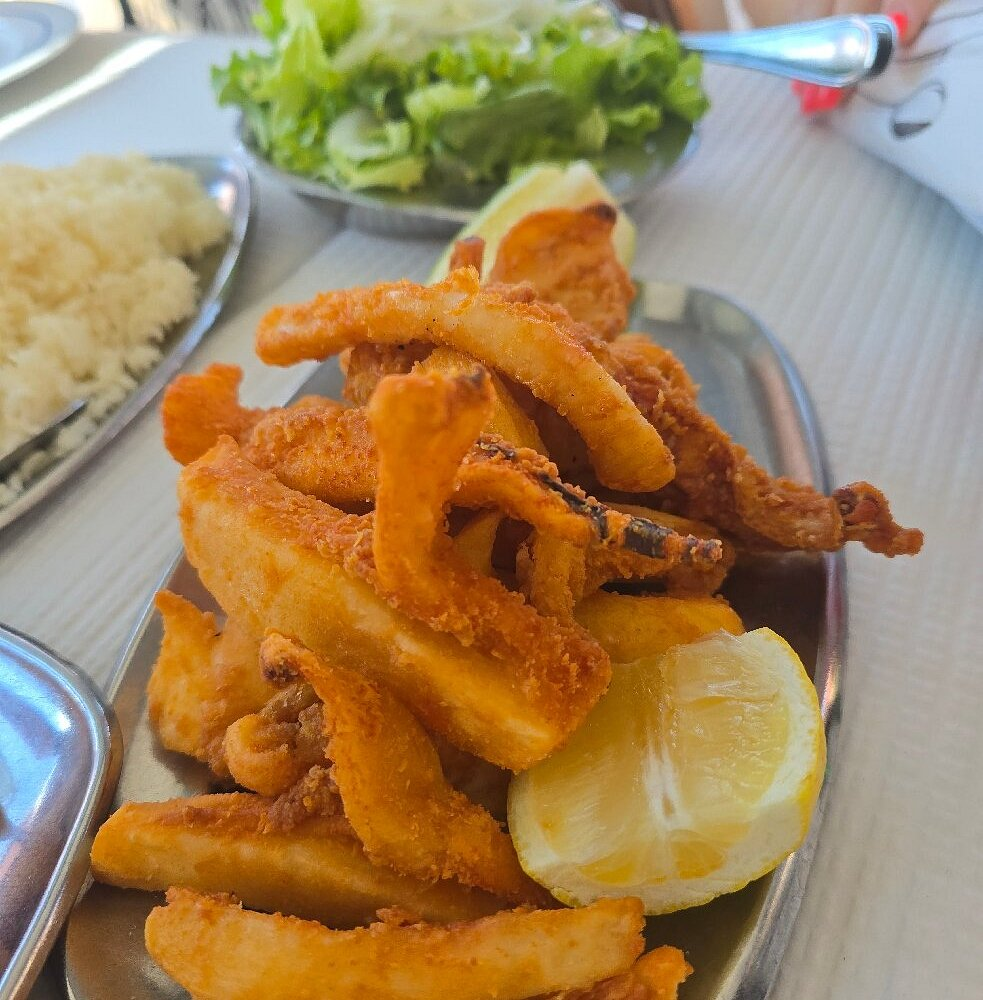
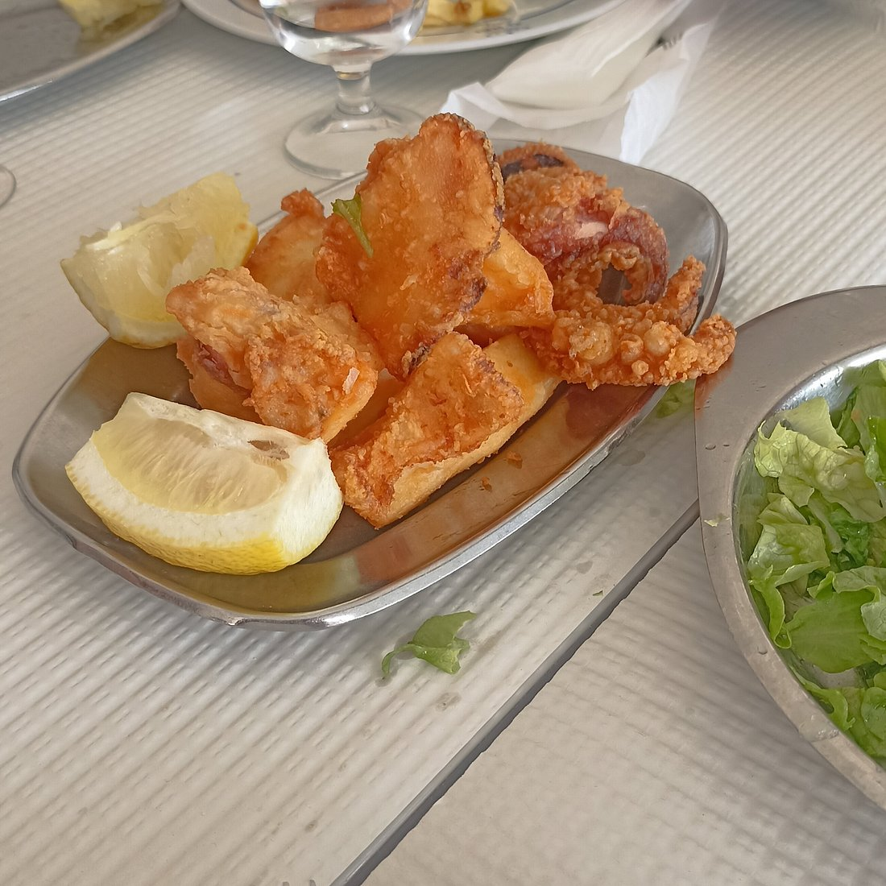
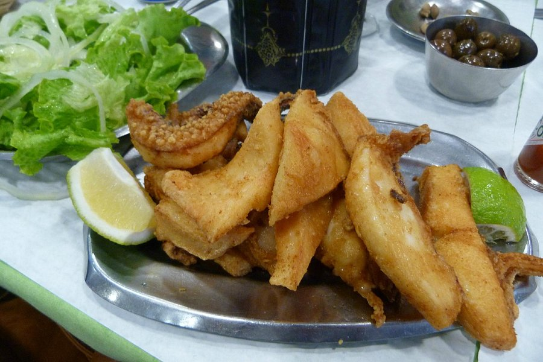
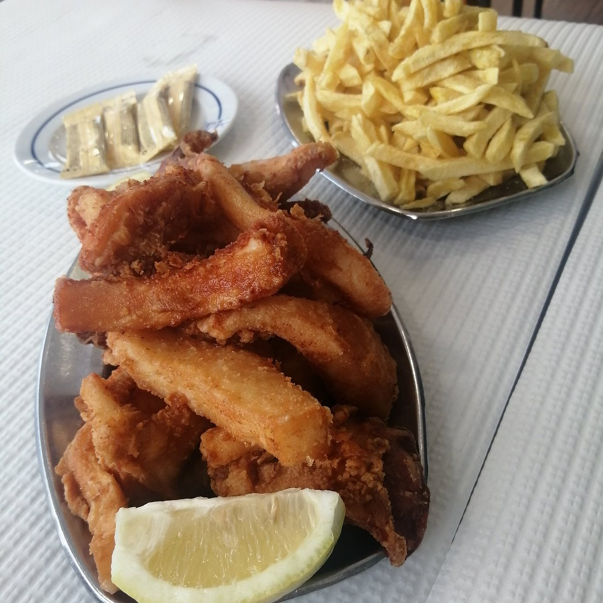
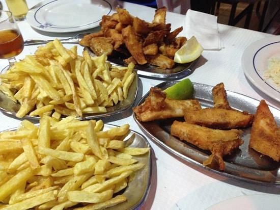
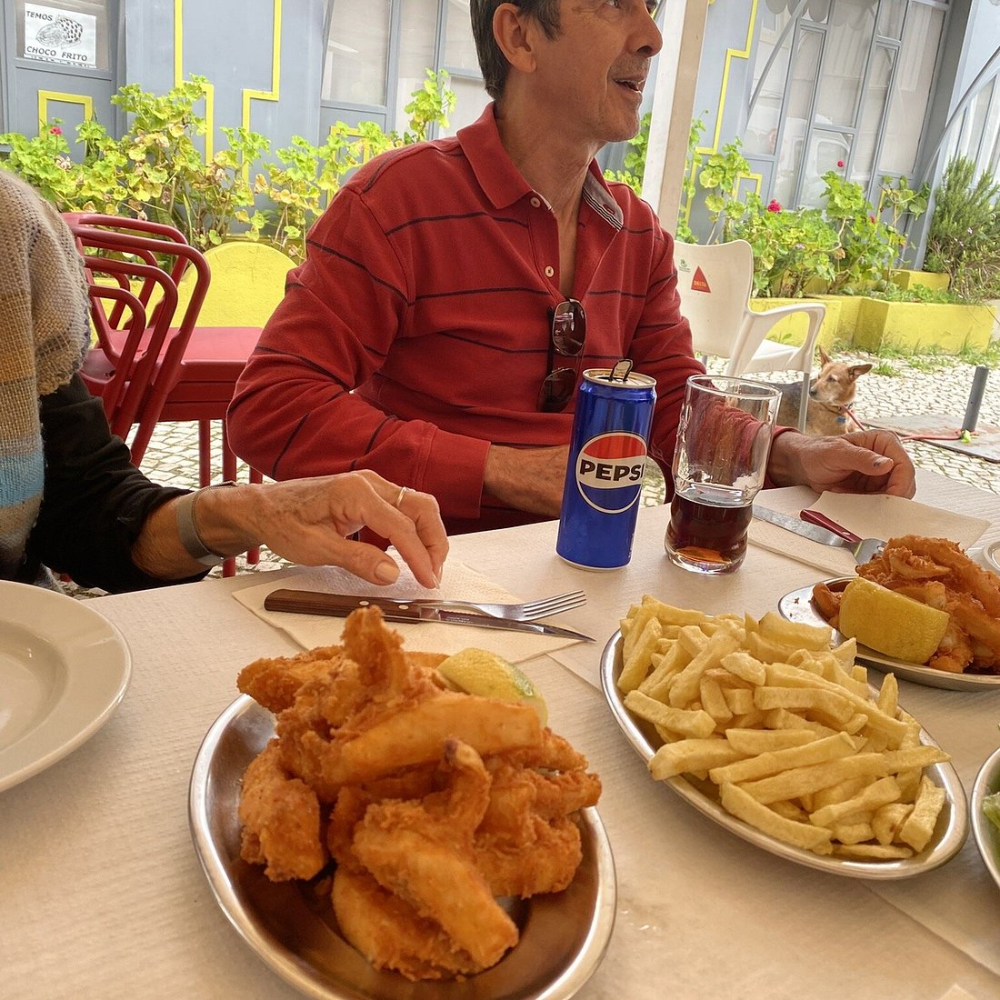
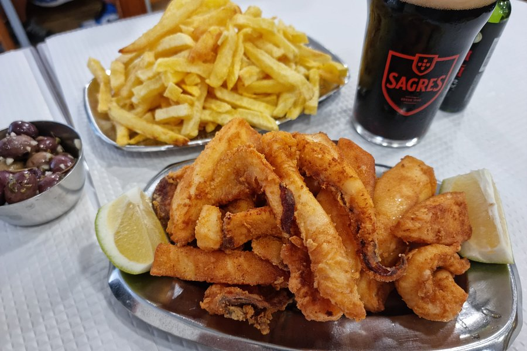
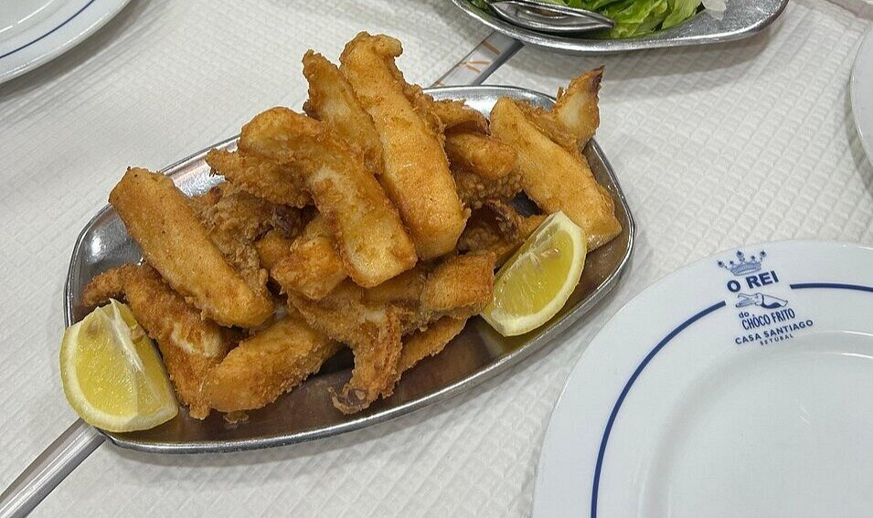

Peixe fresco do Sado, tradição familiar, sabor que não se esquece.

Fundado em 1974 por Virgílio Santiago, o Casa Santiago nasceu na Avenida Luísa Todi com uma promessa simples: servir o melhor choco frito de Setúbal, todos os dias.
Mais de cinquenta anos depois, a família continua à frente do fogão. Os mesmos sabores, o mesmo cuidado, a mesma honestidade na mesa.
Produto fresco, receitas de sempre. Os preços podem variar com a época.
* Ementa sujeita a alterações consoante a disponibilidade do pescado fresco.








"O choco frito mais autêntico que já comi. Ambiente simples, produto impecável. Voltamos sempre que estamos em Setúbal."
"Cinquenta anos de tradição não mentem. O peixe é fresco, o atendimento é simpático e os preços são justos. Recomendo sem hesitar."
"Lugar de culto em Setúbal. Se não comeres o choco frito do Casa Santiago, não conheceste verdadeiramente a cidade."
Avenida Luísa Todi 92/94
2900-450 Setúbal
Segunda a Sábado
12h00 – 22h00
Encerra ao Domingo